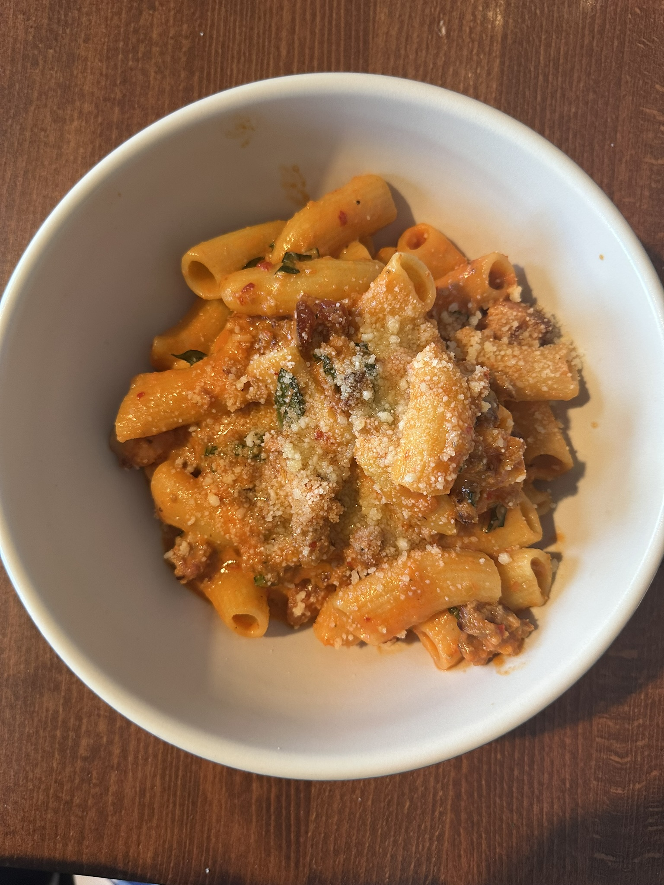

Home
Spicy Vodka

Pasta that's nice with a little bit of spice!
Rigatoni pasta dressed with a nice, creamy red and mildly spicy vodka sauce.
Finished off with parmesan, shaved garlic, basil, and italian sausage, and crispy pancetta!
Ingredients
- 4 cloves garlic
- 2 tomatoes
- 1/3 lb italian sausage
- 1/3 lb crispy pancetta
- 1/4 cup basil
- 3 tablespoon vodka
- 24 oz rigatoni pasta
- 1/3 cup whipping cream
- 8oz grated parmesan
Steps
- Heat garlic and sausage over medium high in deep skillet until sausage is cooked
- Add fresh basil, crush and add tomatoes, and add 8oz parmesan. Cook for 20 minutes and stir occasionally
- Add in vodka and whipping cream for another 30 minutes
- Boil and drain pasta to preferred cook
- Add the pasta to the sauce for a few minutes, add any preferred spices, and enjoy!